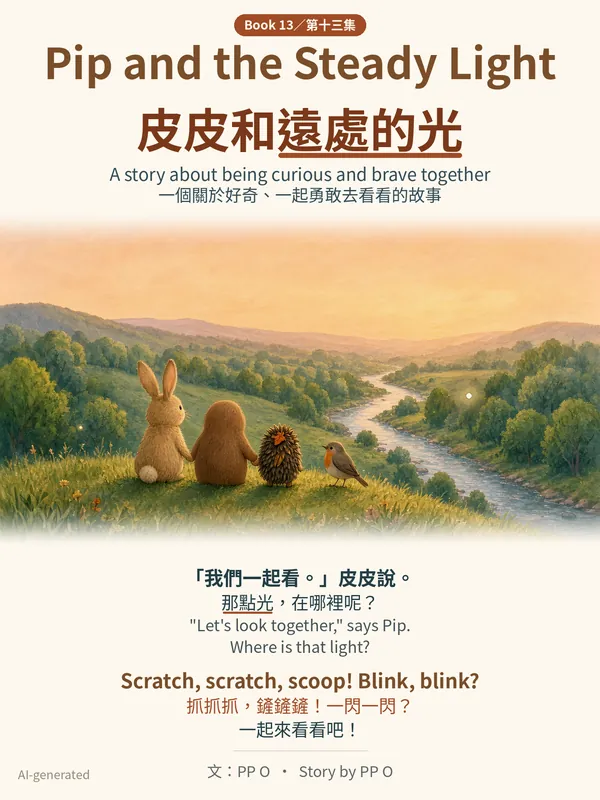
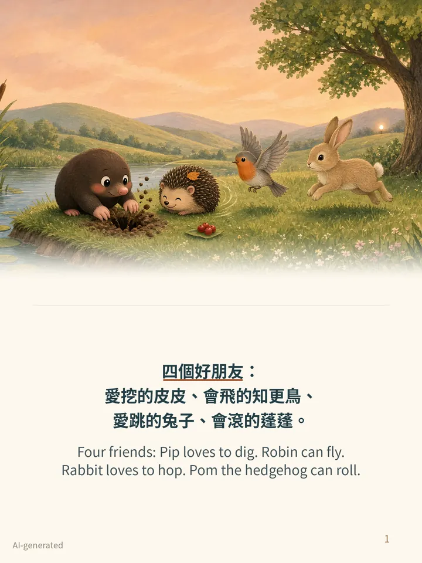
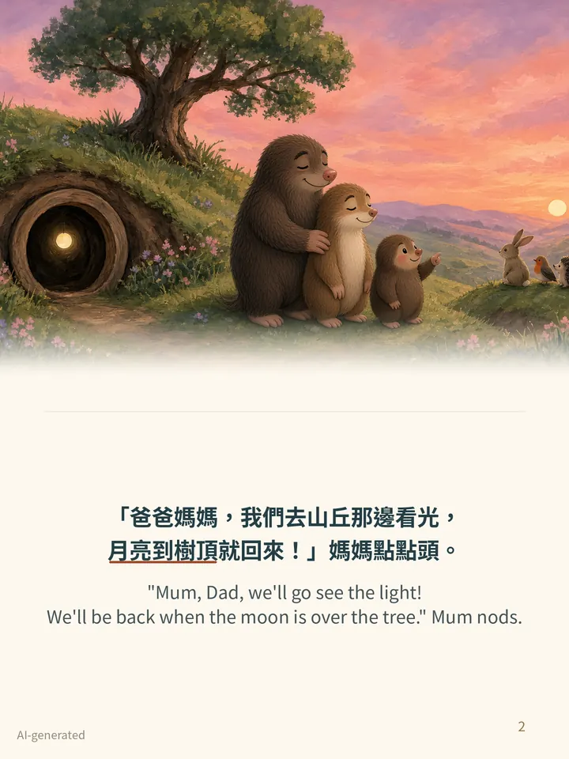
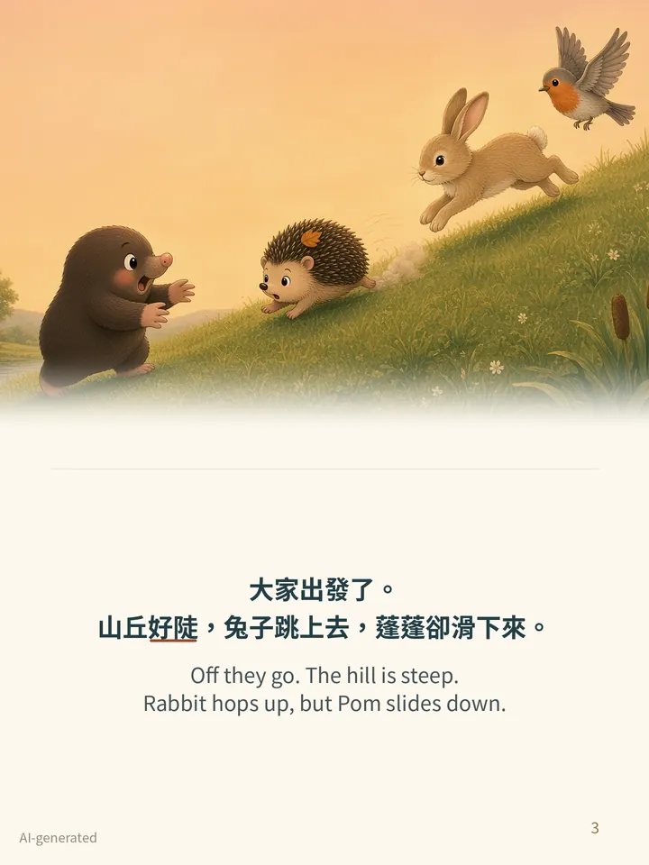
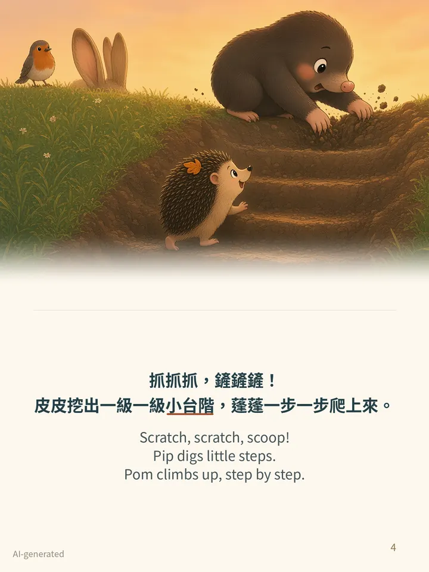

Book 13 · 第十三集
Pip and the Steady Light皮皮和遠處的光
Also available: the Pip bundle of Books 1–6 for US$9.99 · 另有皮皮第 1–6 集套裝 US$9.99
Beyond the hill, one light never blinks. Pip tells Mum and Dad where they're going, and the four friends set off. At the top of the hill is a big, big valley, and it's getting dark. Pip's heart goes thump, thump. He wants to go home… until he sees Pom, curled up tight. He holds her little paw: “Let's look together.” Robin flies up to the tallest pine: “I see it! By the stream. It doesn't blink or move. That's our light!” A gentle story about being curious and brave together. The first book of Season 3.
山丘那邊，有一點光不閃也不動。皮皮跟爸媽說好去哪裡，就和好朋友出發了。河谷好大，皮皮好怕，可是他看見蓬蓬縮成一團，就牽起她的小爪子：「我們一起看。」第三輯第一本。
- Ages · 年齡
- 3–6 · 適合 3–6 歲
- Language · 語言
- English + Traditional Chinese on every page · 每頁中英對照（繁體中文）
- Theme · 主題
- Being curious and brave together · 好奇、一起勇敢去看看
- Format · 格式
- PDF ebook, 19 pages (cover, 16 story pages, a read-aloud refrain page, back cover); screen and print-ready 300 dpi versions · PDF 電子書，共 19 頁
- Story · 故事
- PP O (Hong Kong); illustrations AI-generated · 插圖由 AI 生成
Look inside · 內頁預覽




The free sample has the cover and the first 5 story pages. Book 13 also reads fine on its own. 免費試讀版包括封面和故事的頭 5 頁。
Also available: the Pip bundle of Books 1–6 for US$9.99 · 另有皮皮第 1–6 集套裝 US$9.99
More Pip books · 更多皮皮繪本
Pip and the Wobbly Bridge 皮皮和搖晃的橋 · Pip and the Fog 皮皮和大霧 · Pip and the Little Lantern 皮皮和小燈籠 · Pip and the Apple Tree 皮皮和蘋果樹 · Pip and the Old Badger 皮皮和獾婆婆 · Pip and the Friendship Circle 皮皮和大圓圈 · Pip and the Hot Day 皮皮和大熱天 · Pip and the Thorny Bush 皮皮和刺刺叢 · Pip and the Spring Nest 皮皮和春天的鳥窩 · Pip and the Snow Slide 皮皮和雪滑梯 · Pip and the Leaf Nest 皮皮和葉子窩 · Pip and the First Snow 皮皮和第一場雪 · Pip and the Windy Day 皮皮和大風天 · Pip and the Autumn Leaves 皮皮和落葉 · Pip and the Night Lights 皮皮和螢火蟲 · Pip and the Big Rain 皮皮和大雨天 · Pip's Big Dig 皮皮的大挖掘